Сегодня я хочу рассказать о том, как создавала программный 3D-рендерер для Playdate.
С самого начала у меня не было никаких ориентиров по производительности. Я понятия не имела, насколько вообще реалистична эта задумка, поэтому решил начать с простого теста – рейкастера.
Много лет назад я уже писала подобный движок, вдохновляясь примерами кода со страницы Кена Сильвермана. С тех пор рейкастер стал для меня традиционным лакмусовым тестом: я запускаю его каждый раз, когда нужно оценить вычислительные мощности и скорость вывода графики на слабом устройстве.
Для написания, компиляции и запуска такого теста не требуется почти ничего, зато он даёт прекрасное первое представление о железе. В частности, он подсвечивает ключевые для 3D-рендеринга узкие места: быстродействие при работе с плавающей запятой и векторной математикой, скорость работы с памятью, частоту обновления экрана и возможные подводные камни при настройке фреймбуфера.
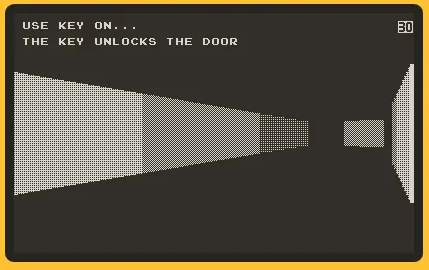
Рейкастер в эмуляторе
Первые результаты разочаровали. Производительность оказалась настолько плачевной, что стало очевидно: лёгкой прогулки не предвидится.
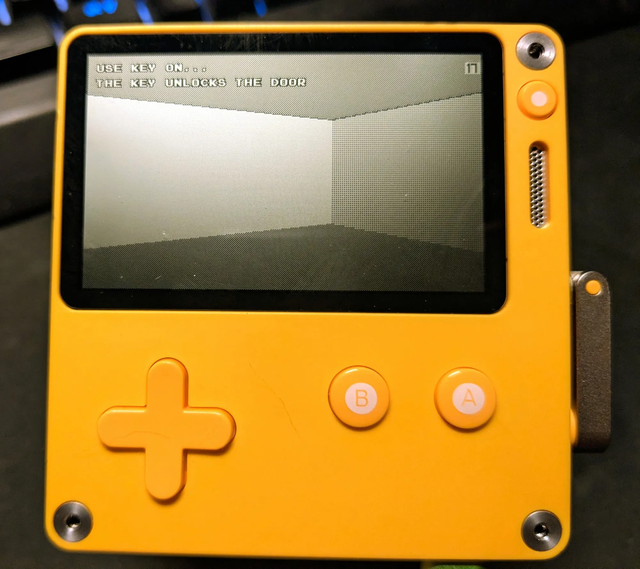
Рейкастер на реальной Playdate
Оговорюсь сразу: мой тестовый рейкастер вовсе не выжимал из железа максимум. Моей целью не стоял вывод полноценного рейкастинг-движка на Playdate (хотя с должной оптимизацией это вполне реально). Я лишь хотела пощупать железо и понять, на что эта штука способна, а где упирается в потолок.
Эксперимент помог очертить границы возможного. Стало ясно: устройство не потянет трёхмерные сцены уровня первых 3D-ускорителей вроде 3dfx Voodoo и уж точно не сравнится со старой доброй PlayStation. Но ещё оставалась надежда. Экран у Playdate крошечный, с низким разрешением, а главное – 1-битный (монохромный), что даёт огромную экономию памяти и ресурсов.
Глядя на цифры, я всё ещё верила, что смогу выдать картинку, которая чисто визуально напомнит игрокам эпоху 3DO или Sega Saturn.
Поясню: говоря о сходстве с 3DO или Saturn, я имею в виду субъективные визуальные ощущения, а не архитектурные параллели. Железо тех консолей кардинально отличается от начинки Playdate.
И 3DO, и Saturn оснащались скромными центральными процессорами и отдельными чипами для отрисовки полигонов (в основном четырёхугольников, quads). Производители экономили на ЦП, перекладывая основную графическую рутину на железо. Следствием этого стала жёсткая негибкость – консоли отлично вырисовывали кадры по заложенному алгоритму, но пасовали, если игра требовала иного подхода. Именно поэтому порты Doom на них так удручали – движок Doom никак не вписывался в архитектурные рамки этих платформ.
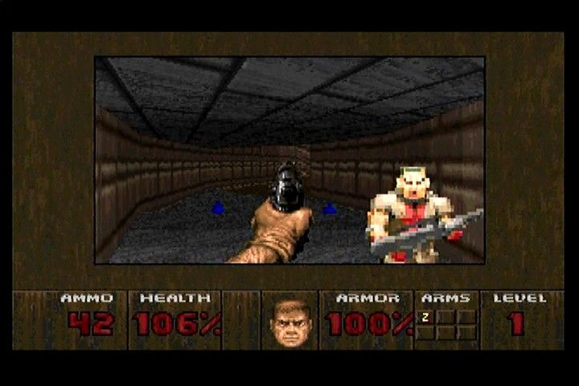
Doom на 3DO
У Playdate же никакого графического ускорения нет вовсе. Хочешь 3D? Считай всё на центральном процессоре.
Забудьте о сортировке полигонов, аппаратном растеризаторе или Z-буфере. Никакого автоматического клиппинга треугольников по пирамиде видимости, никакого текстурирования, фильтрации или перспективной коррекции. Вообще ничего.
Прежде чем погружаться в детали, давайте вспомним, что вообще представляет собой трёхмерная графика с технической точки зрения.
Мы живём в трёхмерном пространстве. У предметов есть ширина, высота и глубина. Они располагаются дальше или ближе, выше или ниже, левее или правее. Наш мозг с лёгкостью воспринимает эти объёмы и ориентируется в них.
Однако на сетчатку глаза попадает лишь плоская двумерная проекция этого мира. Объём мы дорисовываем благодаря косвенным признакам: перспективе, параллаксу движения, масштабу, теням и перекрытию объектов.
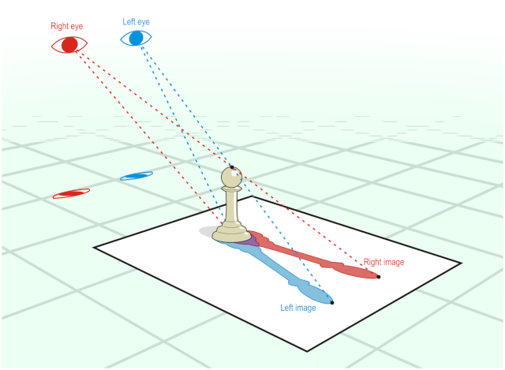
Глаза воспринимают проекцию 3D-мира
Компьютерная графика прибегает к точно таким же уловкам.
Ни одна 3D-игра не рисует по-настоящему объёмный мир – экран-то плоский. Даже стереоскопические 3D-экраны формируют плоские картинки. Всё, что мы делаем, – это обрабатываем математическое описание трёхмерной сцены, виртуально помещаем туда камеру и проецируем полученный вид на плоскую плоскость кадра – ровно так же, как реальный мир проецируется на сетчатку
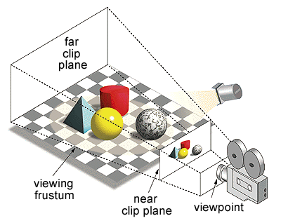
Усечённая пирамида видимости, или фрустум
За превращение спроецированной геометрии в точки на экране отвечает растеризатор. Именно он решает, как наложить текстуры, как обработать перекрытия полигонов и выполнить клиппинг, после чего записывает готовые пиксели во фреймбуфер.
Фреймбуфер хранит готовое двумерное изображение текущего кадра, которое затем и выводится на дисплей.
На современных компьютерах и консолях эту работу берёт на себя видеокарта. В Playdate видеочипа нет, поэтому CPU-процессору приходится делать всё вручную: трансформировать вершины, проецировать их, отсекать лишнее, сортировать, затенять, текстурировать и отрисовывать каждый пиксель во фреймбуфер. И делать это надо достаточно быстро, чтобы выдавать плавную картинку много раз в секунду.
В этом и заключается главная интрига. Вопрос ведь не в том, “может ли устройство нарисовать 3D?”. Нарисовать трёхмерный куб способен хоть ZX Spectrum – дайте ему только пару секунд на кадр. Главный вопрос: “может ли оно делать это достаточно быстро для полноценной игры в реальном времени?”.
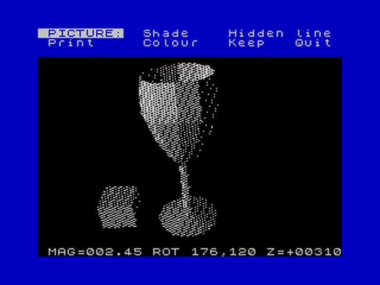
ZX Spectrum вырисовывает 3D-графику
Мой рендерер считывает карты формата Quake BSP. Я остановилась на нём по двум причинам.
Во-первых, это избавило меня от необходимости писать собственный редактор уровней и компилятор карт с нуля. Я могу спокойно верстать геометрию в TrenchBroom, а затем компилировать карты, расчёты видимости и освещение через готовый инструментарий ericw-tools. Экономия времени – колоссальная.
Во-вторых, формат BSP из Quake изначально проектировался с расчётом на максимальный предпросчёт всех данных для слабых машин, – ровно то, что доктор прописал.
BSP означает “двоичное разбиение пространства” (binary space partitioning). Суть метода – рекурсивное рассечение пространства плоскостями. В 3D каждая плоскость делит мир на две полуплоскости. Повторяя эту операцию, мы строим дерево: во внутренних узлах хранятся секущие плоскости, а в листьях – конкретные выпуклые области мира. В BSP-дереве Quake такие листья представляют собой выпуклые секторы, и каждый лист “знает”, какие грани к нему примыкают и какие другие сектора могут быть видны из этой точки
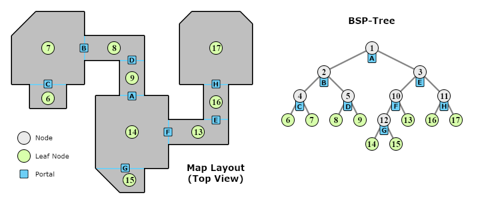
Принцип работы BSP
Компилятор берёт на себя самую тяжкую работу задолго до запуска игры. Он нарезает геометрию брашей на BSP-дерево, рассчитывает видимость между секторами и упаковывает её в так называемый PVS (potentially visible set – потенциально видимое множество). В рантайме движок просто определяет, в каком листе находится камера, и на основе PVS мгновенно отсекает гигантские куски уровня ещё до начала растеризации. Экономия процессорного времени получается огромной.
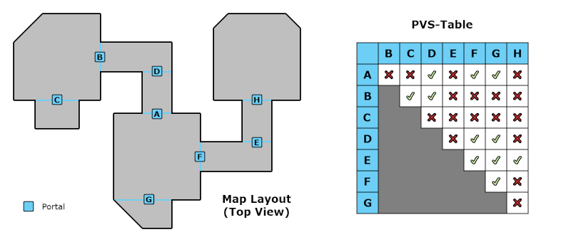
Визуализация PVS
Обратная сторона медали – BSP любит статику. К тому же дизайн уровней приходится строго подчинять законам видимости. К примеру, прямой коридор, соединяющий два огромных зала, заставит движок обрабатывать слишком много геометрии одновременно. Зато Г-образный коридор перекроет прямую видимость и позволит PVS за один миг выкинуть из кадра невидимый зал.
Использование BSP превратило фантазию в рабочий проект. Переиспользование готового инструментария сэкономило уйму времени. Не нужно изобретать велосипед – всегда лучше осмотреться и адаптировать проверенные решения под свои задачи. Благодаря проверенным временем утилитам для моделирования, компиляции, расчёта видимости и света я смогла сосредоточиться на самом главном.
А вот сам софтверный 3D-рендерер я написала абсолютно с нуля. Я сознательно отказалась от прямого порта Quake или сторонних библиотек: мне хотелось досконально разбираться в каждой строчке кода, гибко экспериментировать с идеями и выковать уникальный визуальный стиль игры.
Z-буфер – это буфер глубины. Он запоминает, на каком расстоянии от камеры находится каждый уже отрисованный пиксель. Если движок пытается нарисовать новый пиксель поверх старого, он сначала сравнивает их глубину. Так далёкие объекты не перекрывают те, что расположены ближе.
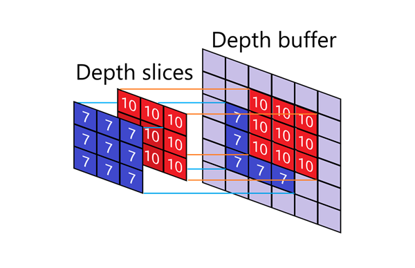
В первых версиях моего рендерера Z-буфера не было вовсе. Я пыталась обойтись классическим “алгоритмом художника” – вырисовывать геометрию строго от дальних объектов к ближним.
Однако тесты показали: отказ от Z-буфера не давал ощутимого прироста скорости, а вот головной боли добавил. Тогда он всё-таки появился в движке.
Я реализовала 16-битный буфер обратной глубины. Вместо прямого хранения линейного расстояния он записывает величину, обратную глубине (1/z). Это обеспечивает высокую точность рядом с камерой, где погрешности сразу бросаются в глаза, и избавляет от неприятных артефактов, заметных на 8-битном буфере.
Кроме того, Z-буфер сильно упростил работу с динамическими объектами и маскированными текстурами. Двери, лифты и подбираемые предметы теперь проходят тот же тест глубины, что и статические стены. А прозрачные текстуры (вода, решётки, стёкла, спрайты) просто скипают невидимые пиксели, корректно занося видимые в буфер.
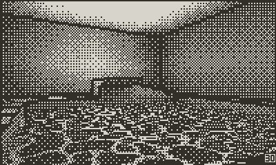
Анимация воды
Я испробовала множество подходов, пытаясь выяснить, на каких ухищрениях можно сэкономить ресурсы.
Самый дешёвый способ – аффинное текстурирование. При нём координаты текстуры интерполируются прямо по плоскости экрана. Это работает невероятно быстро, но выглядит корректно только если полигон строго параллелен экрану. Стоит ему повернуться под углом – текстура начинает плыть и изгибаться. Помните, как дрожали текстуры на первой PlayStation?
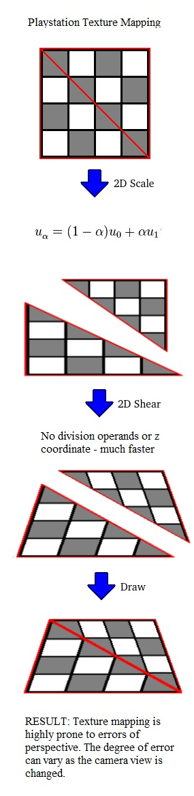
Аффинное текстурирование на PlayStation
В моём случае искажения слишком сильно бросались в глаза. Обычно для борьбы с этим меш дробится на мелкие полигоны, но я решила не плодить геометрию, а сразу протестировать перспективно-корректное текстурирование.
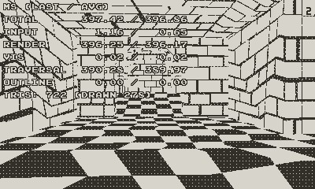
Аффинное наложение текстур в моём рендерере
Я остановилась на классическом перспективно-корректном алгоритме. Вместо линейной интерполяции координат по экрану движок интерполирует величины, сохраняющие математическую корректность после проецирования: 1/z (обратную глубину), u/z, v/z, а затем для каждого пикселя восстанавливает реальные координаты текстуры путём деления.
Текстуры легли идеально монолитно, без единого излома, но за это пришлось платить: деление на каждый пиксель – суровое испытание для процессора Playdate. Пришлось пойти на хитрость. Я вычисляю честное деление только раз в несколько пикселей, а промежуточные значения быстро аппроксимирую на основе предыдущих шагов. Глаз разницы не замечает, зато прирост скорости ощутимый – особенно если учесть, что текстурирование занимает львиную долю ресурсов.
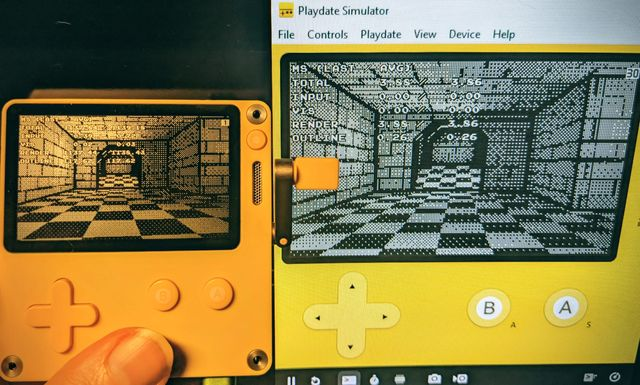
Перспективно-корректное наложение текстур
Освещение стало одним из самых необычных этапов разработки, ведь дисплей Playdate не поддерживает не то что цвета, но даже градации серого. Пиксель может быть либо чёрным, либо белым
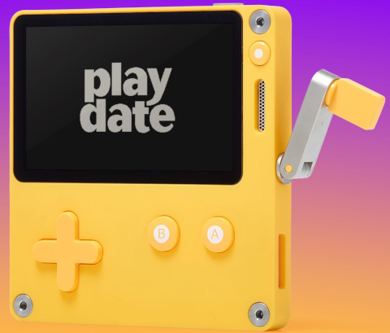
Playdate не заряжается через ручку – это распространённое заблуждение, крутилка служит только для управления играми
Файлы BSP в Quake задействуют предпросчитанные карты света, а утилиты ericw-tools умеют запекать продвинутый свет – с отражённым освещением и радиосити. Мой движок считывает эти данные и конвертирует их в вершину, что обходится значительно дешевле в рантайме.
Но как передать полутона и яркость, имея в распоряжении всего два цвета?
Ответ простой: дизеринг.
Дизеринг иллюзорно воссоздаёт полутона за счёт особого узора из чёрных и белых точек. Каждый отдельный пиксель остаётся бинарным, но в группе они создают ощущение более светлого или тёмного участка. На расстоянии или в динамике глаз естественным образом сливает этот узор в полутоновую гамму.
Узоры дизеринга
Движок использует матрицу Байера 8x8. Для каждого пикселя вычисленная яркость сравнивается с пороговым значением из матрицы. Если яркость выше порога – пиксель красится в белый, если ниже – в чёрный.
В итоге вся поверхность кажется покрытой плавным градиентом, хотя физически на экране присутствуют лишь монохромные точки.
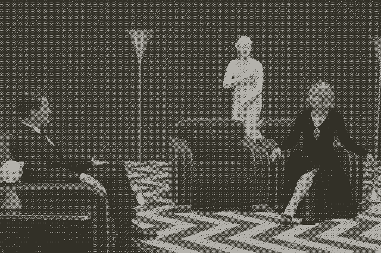
Самое коварное в дизеринге – тонкая грань между красотой и кашей. Полностью затекстурированная и освещённая сцена с технической точки зрения может выглядеть круто, но на 1-битном экранчике превращается в нечитаемый визуальный шум. Это и стало моей следующей битвой.
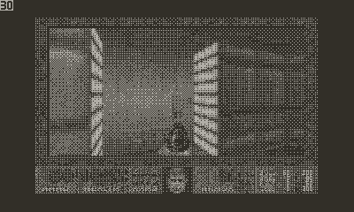
Визуальный шум при конвертации Doom в 1 бит
Главным ориентиром для меня служила Return of the Obra Dinn. К тому же я обожаю стилистику Jet Set Radio. Поэтому я с самого начала целилась в жирные контуры и лаконичные текстуры – эдакий монохромный селшейдинг.
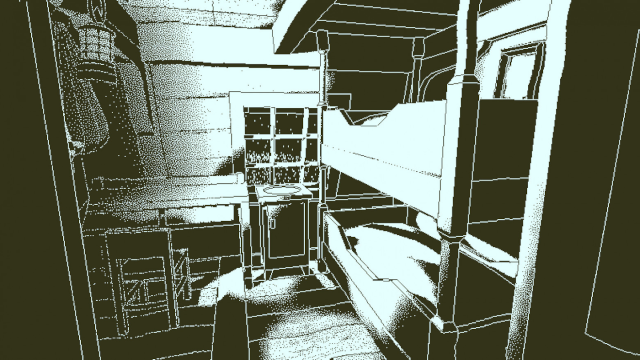
Return of the Obra Dinn
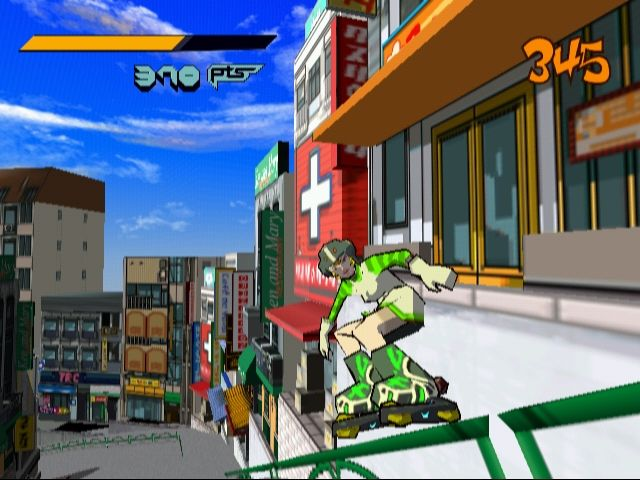
Jet Set Radio
Тем не менее я решила сначала опробовать классику: обычные текстуры, запечённый свет и поверх этого – дизеринг.
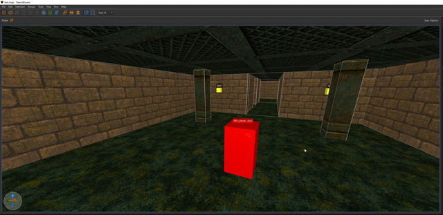
Тестовая карта в редакторе
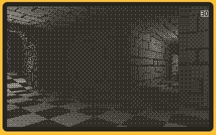
Картинка перенасыщена рябью
Как я и опасалась, вышло слишком рябо. Формы предметов и фактура размывались в сплошной шум. Наверное, после десятков полировок из этого можно было выжать толк, но тест чётко дал понять: нужно идти по пути минимализма и чётких контуров.
Затем я запустила ту же карту с простыми текстурами и жирной обводкой граней.
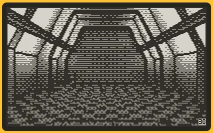
Монохромный селшейдинг в действии
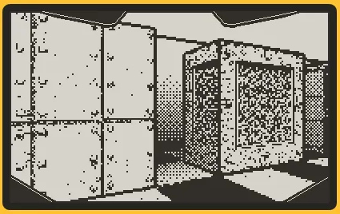
Чёткие контуры и читаемые формы
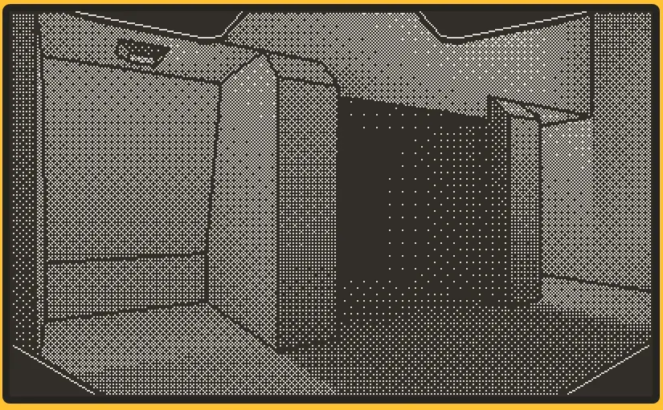
Стильный минимализм
Читаемость сцены мгновенно возросла! А главное, у игры появилось собственное запоминающееся лицо. Визуал заиграл – я поняла, что нащупала верный курс.
В редакторе такие текстуры смотрятся немного наивно и забавно, но внутри игры они работают безупречно – а это главное.
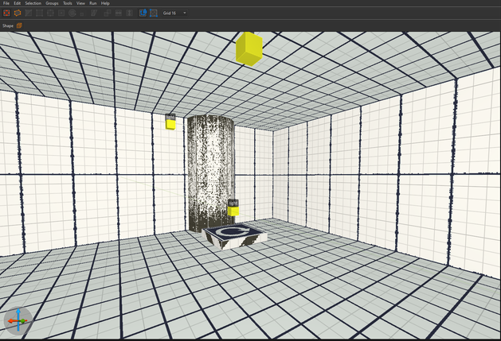
Забавные текстуры в редакторе...
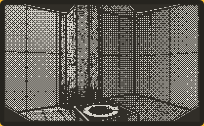
...И то, как органично они выглядят в игре
Я перепробовала кучу трюков и прогоняла замеры производительности после каждой правки. Вот к каким выводам я пришла в поисках идеала для Playdate:
#if TARGET_PLAYDATE
#define PD_HOT __attribute__((section(".text.hot"))) __attribute__((aligned(32)))
#define PD_FORCEINLINE inline __attribute__((always_inline))
#else
#define PD_HOT
#define PD_FORCEINLINE inline
#endif
Если вы решите оптимизировать игру под Playdate, воспринимайте все советы как почву для размышлений. То, что выстрелило у меня, может не сработать в вашем проекте. Проводите собственные тесты и убеждайтесь, что каждая оптимизация действительно приносит пользу.
Разработка 3D-движка для Playdate оказалась долгим, но увлекательным приключением. Вначале я искренне сомневалась, возможно ли это вообще. Каждый раз, когда очередная фича выдавала слайд-шоу, руки невольно опускались. Но я продолжала двигаться вперёд.
Мой рендерер далёк от идеала, но он достаточно хорош. И если вы хотите доводить проекты до конца, вовремя останавливайтесь на критерии “достаточно хорошо”.
Доведя графический движок до рабочей кондиции, я смогла перейти к прототипированию геймплея. Сейчас у меня на руках жизнеспособный прототип, который начинает ощущаться как настоящая игра. А для разработчика игр ничего важнее быть не может.